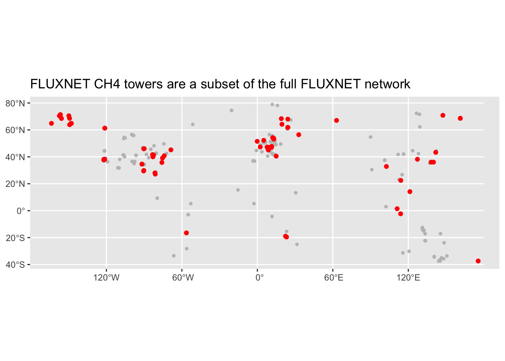
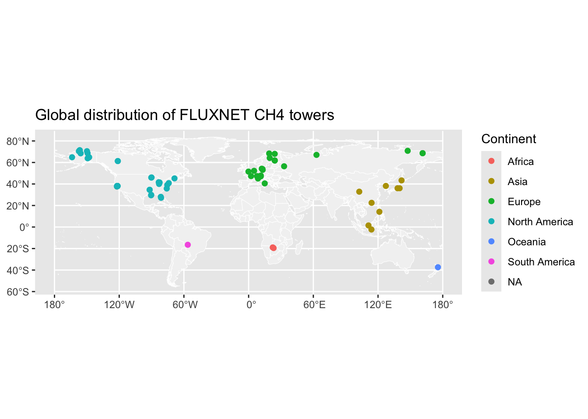
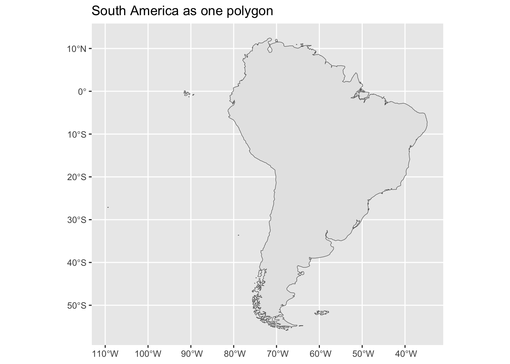
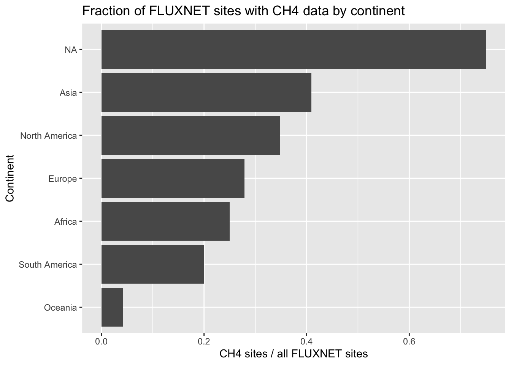
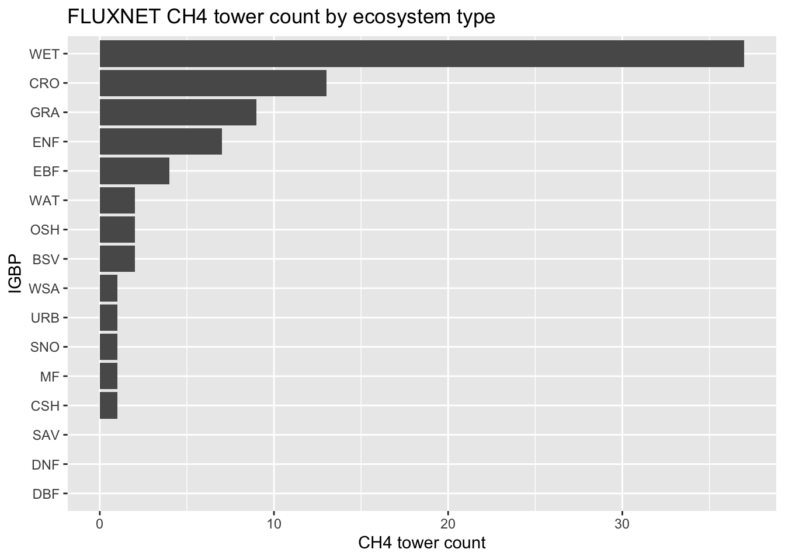
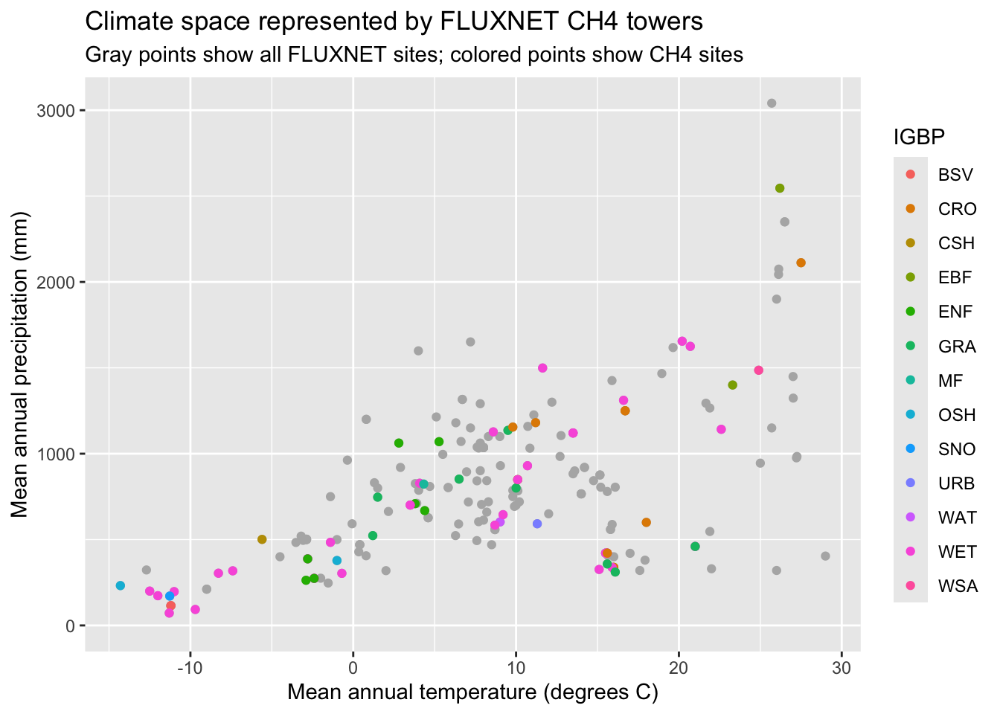
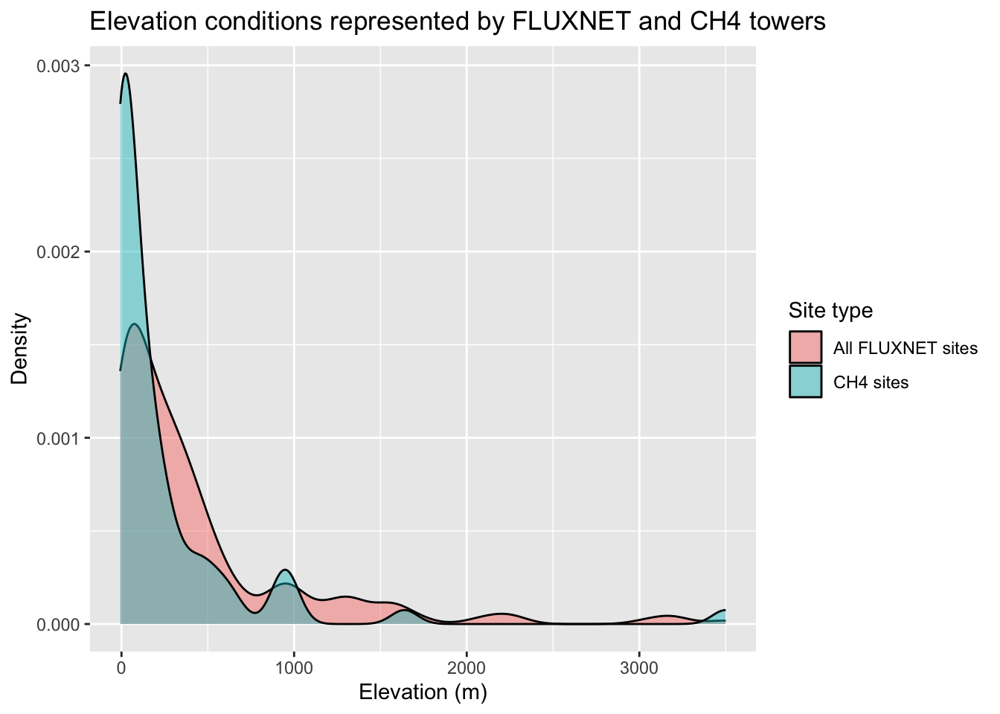

install.packages("sf")
install.packages("rnaturalearth")
install.packages("tidyverse")
install.packages("ggplot2")Vector Data: Mapping Gaps in the Global Methane Tower Network
Mapping methane observations
Models are only as good as the places where we collect data. FLUXNET towers provide direct measurements of ecosystem-atmosphere exchange, and FLUXNET-CH4 towers are especially important for understanding methane emissions from natural ecosystems. But the tower network is not evenly distributed across the planet.
In this workshop, we will use vector data to ask:
If FLUXNET CH4 towers are used to understand natural methane emissions, where are we observing the planet, and where are we guessing?
By the end of the workshop, you will be able to:
- Convert tabular coordinates into simple feature objects.
- Inspect geometries and coordinate reference systems.
- Transform vector data into an appropriate projected CRS.
- Measure distances among point locations.
- Use country and continent polygons from
rnaturalearth. - Use spatial predicates and spatial joins to count towers inside regions.
- Calculate polygon area and tower density.
- Evaluate basic representativeness of the CH4 tower network.
- Write spatial outputs for later workshops.
Install libraries for this workshop
Load the required libraries
library(sf)
library(rnaturalearth)
library(tidyverse)
library(ggplot2)Data
Import FluxNet_Sites_2024.csv. This table was created from the FLUXNET site list found at https://fluxnet.org/sites/site-list-and-pages/?view=table.
fluxnet_sites <- read.csv("data/FluxNet_Sites_2024.csv")This dataset includes:
| Column Name | Description |
|---|---|
| SITE_ID | Unique site ID |
| SITE_NAME | Site name |
| FLUXNET2015 | License information for FLUXNET2015 |
| FLUXNET-CH4 | License information for FLUXNET-CH4 |
| LOCATION_LAT | Latitude |
| LOCATION_LONG | Longitude |
| LOCATION_ELEV | Elevation in meters |
| IGBP | Vegetation type |
| MAT | Mean annual temperature in degrees C |
| MAP | Mean annual precipitation in mm |
Take a look at the file:
View(fluxnet_sites)Start with a non-spatial view of the tower locations. At this stage, latitude and longitude are just numbers:
ggplot(data = fluxnet_sites,
aes(x = LOCATION_LONG, y = LOCATION_LAT)) +
geom_point() +
labs(title = "FLUXNET tower locations as longitude and latitude",
x = "Longitude",
y = "Latitude")Warning: Removed 1 row containing missing values or values outside the scale range
(`geom_point()`).
Look at the climate and elevation conditions represented by the full tower list:
ggplot(data = fluxnet_sites, aes(x = LOCATION_ELEV)) +
geom_histogram(color = "black", fill = "white") +
labs(title = "Elevation of FLUXNET tower sites",
x = "Elevation (m)",
y = "Count")`stat_bin()` using `bins = 30`. Pick better value `binwidth`.Warning: Removed 50 rows containing non-finite outside the scale range
(`stat_bin()`).
ggplot(data = fluxnet_sites, aes(x = MAT)) +
geom_histogram(color = "black", fill = "white") +
labs(title = "Mean annual temperature of FLUXNET tower sites",
x = "Mean annual temperature (degrees C)",
y = "Count")`stat_bin()` using `bins = 30`. Pick better value `binwidth`.Warning: Removed 59 rows containing non-finite outside the scale range
(`stat_bin()`).
ggplot(data = fluxnet_sites, aes(x = MAP)) +
geom_histogram(color = "black", fill = "white") +
labs(title = "Mean annual precipitation of FLUXNET tower sites",
x = "Mean annual precipitation (mm)",
y = "Count")`stat_bin()` using `bins = 30`. Pick better value `binwidth`.Warning: Removed 60 rows containing non-finite outside the scale range
(`stat_bin()`).
From tables to simple features
We are interested in the sites with methane data. The column FLUXNET-CH4 is read into R as FLUXNET.CH4, because R replaces the hyphen with a dot.
fluxnet_ch4 <- fluxnet_sites %>%
filter(FLUXNET.CH4 != "")How many total FLUXNET sites are in the table? How many have CH4 data?
nrow(fluxnet_sites)[1] 268nrow(fluxnet_ch4)[1] 81This object is still a data frame:
class(fluxnet_ch4)[1] "data.frame"Latitude and longitude become spatial data when we tell R which columns contain coordinates and what coordinate reference system they use. A few rows in the full FLUXNET table may be missing coordinates, so remove those before converting the table to points. These coordinates are in WGS84 longitude/latitude, EPSG 4326.
fluxnet_sites_located <- fluxnet_sites %>%
filter(!is.na(LOCATION_LONG), !is.na(LOCATION_LAT))
fluxnet_ch4_located <- fluxnet_ch4 %>%
filter(!is.na(LOCATION_LONG), !is.na(LOCATION_LAT))fluxnet_sites_sf <- st_as_sf(x = fluxnet_sites_located,
coords = c("LOCATION_LONG", "LOCATION_LAT"),
crs = 4326)
fluxnet_ch4_sf <- st_as_sf(x = fluxnet_ch4_located,
coords = c("LOCATION_LONG", "LOCATION_LAT"),
crs = 4326)Now map the full FLUXNET network and the CH4 subset:
ggplot() +
geom_sf(data = fluxnet_sites_sf, color = "gray75", size = 1) +
geom_sf(data = fluxnet_ch4_sf, color = "red", size = 1.6) +
labs(title = "FLUXNET CH4 towers are a subset of the full FLUXNET network")
Check the class and geometry:
class(fluxnet_ch4_sf)[1] "sf" "data.frame"fluxnet_ch4_sf$geometryGeometry set for 81 features
Geometry type: POINT
Dimension: XY
Bounding box: xmin: -163.7002 ymin: -37.3879 xmax: 175.5539 ymax: 71.3242
Geodetic CRS: WGS 84
First 5 geometries:POINT (11.3175 47.1167)POINT (-56.412 -16.498)POINT (22.3711 -18.9647)POINT (23.1792 -19.5481)POINT (-121.2984 61.3089)print(fluxnet_ch4_sf, n = 3)Simple feature collection with 81 features and 8 fields
Geometry type: POINT
Dimension: XY
Bounding box: xmin: -163.7002 ymin: -37.3879 xmax: 175.5539 ymax: 71.3242
Geodetic CRS: WGS 84
First 3 features:
SITE_ID SITE_NAME FLUXNET2015 FLUXNET.CH4 LOCATION_ELEV IGBP
1 AT-Neu Neustift CC-BY-4.0 CC-BY-4.0 970 GRA
2 BR-Npw Northern Pantanal Wetland CC-BY-4.0 120 WSA
3 BW-Gum Guma CC-BY-4.0 950 WET
MAT MAP geometry
1 6.5 852 POINT (11.3175 47.1167)
2 24.9 1486 POINT (-56.412 -16.498)
3 21.0 460 POINT (22.3711 -18.9647)Simple features describe real-world objects with both attributes and geometry. In this case, the attributes describe tower names, climate, elevation, and vegetation type, while the geometry records each tower’s location.
Geometry checks and coordinate reference systems
st_is_valid() checks whether geometries are valid. Points are usually simple, but it is still a good habit to check spatial data before using it.
st_is_valid(fluxnet_ch4_sf) [1] TRUE TRUE TRUE TRUE TRUE TRUE TRUE TRUE TRUE TRUE TRUE TRUE TRUE TRUE TRUE
[16] TRUE TRUE TRUE TRUE TRUE TRUE TRUE TRUE TRUE TRUE TRUE TRUE TRUE TRUE TRUE
[31] TRUE TRUE TRUE TRUE TRUE TRUE TRUE TRUE TRUE TRUE TRUE TRUE TRUE TRUE TRUE
[46] TRUE TRUE TRUE TRUE TRUE TRUE TRUE TRUE TRUE TRUE TRUE TRUE TRUE TRUE TRUE
[61] TRUE TRUE TRUE TRUE TRUE TRUE TRUE TRUE TRUE TRUE TRUE TRUE TRUE TRUE TRUE
[76] TRUE TRUE TRUE TRUE TRUE TRUECoordinate reference systems (CRS) define how coordinates map to locations on Earth. Longitude/latitude coordinates are useful for storing global locations, but projected coordinates are better when measuring area and distance. We will transform the tower data to World Equidistant Cylindrical, EPSG 4087, so distance and area operations use meters.
fluxnet_sites_sf <- st_transform(fluxnet_sites_sf, crs = 4087)
fluxnet_ch4_sf <- st_transform(fluxnet_ch4_sf, crs = 4087)
fluxnet_ch4_sfSimple feature collection with 81 features and 8 fields
Geometry type: POINT
Dimension: XY
Bounding box: xmin: -18223020 ymin: -4162002 xmax: 19542570 ymax: 7939774
Projected CRS: WGS 84 / World Equidistant Cylindrical
First 10 features:
SITE_ID SITE_NAME FLUXNET2015 FLUXNET.CH4 LOCATION_ELEV IGBP
1 AT-Neu Neustift CC-BY-4.0 CC-BY-4.0 970 GRA
2 BR-Npw Northern Pantanal Wetland CC-BY-4.0 120 WSA
3 BW-Gum Guma CC-BY-4.0 950 WET
4 BW-Nxr Nxaraga CC-BY-4.0 950 GRA
5 CA-SCB Scotty Creek Bog CC-BY-4.0 280 WET
6 CA-SCC Scotty Creek Landscape CC-BY-4.0 285 ENF
7 CH-Cha Chamau CC-BY-4.0 CC-BY-4.0 393 GRA
8 CH-Dav Davos CC-BY-4.0 CC-BY-4.0 1639 ENF
9 CH-Oe2 Oensingen crop CC-BY-4.0 CC-BY-4.0 452 CRO
10 CN-Hgu Hongyuan CC-BY-4.0 3500 GRA
MAT MAP geometry
1 6.5 852.0 POINT (1259858 5245007)
2 24.9 1486.0 POINT (-6279755 -1836549)
3 21.0 460.0 POINT (2490339 -2111141)
4 21.0 460.0 POINT (2580297 -2176085)
5 -2.8 388.0 POINT (-13502876 6824876)
6 -2.8 387.6 POINT (-13502965 6824764)
7 9.5 1136.0 POINT (936241.4 5255415)
8 2.8 1062.0 POINT (1097154 5211455)
9 9.8 1155.0 POINT (860911.5 5263898)
10 1.5 747.0 POINT (11420267 3656322)Are methane towers clustered?
If methane towers are clustered, models may describe those places well while leaving other climate or ecosystem conditions underrepresented. Use st_distance() to calculate the distance among CH4 towers, then identify each tower’s nearest neighbor.
distance_matrix_km <- as.matrix(st_distance(fluxnet_ch4_sf)) / 1000
diag(distance_matrix_km) <- NA
fluxnet_ch4_sf$nearest_neighbor_km <- apply(distance_matrix_km, 1, min, na.rm = TRUE)Map nearest-neighbor distance. Larger values identify more isolated towers:
ggplot(data = fluxnet_ch4_sf) +
geom_sf(aes(color = nearest_neighbor_km), size = 2) +
labs(title = "Nearest CH4 tower distance",
color = "Nearest tower (km)")
Look at the distribution:
ggplot(data = fluxnet_ch4_sf,
aes(x = nearest_neighbor_km)) +
geom_histogram(color = "black", fill = "white") +
labs(title = "Distribution of nearest-neighbor distances",
x = "Distance to nearest CH4 tower (km)",
y = "Count")`stat_bin()` using `bins = 30`. Pick better value `binwidth`.
Which towers are most isolated?
fluxnet_ch4_sf %>%
st_drop_geometry() %>%
select(SITE_ID, SITE_NAME, IGBP, MAT, MAP, nearest_neighbor_km) %>%
arrange(desc(nearest_neighbor_km)) %>%
head() SITE_ID SITE_NAME IGBP MAT MAP nearest_neighbor_km
1 NZ-Kop Kopuatai EBF NA NA 7895.810
2 BR-Npw Northern Pantanal Wetland WSA 24.9 1486.0 5588.323
3 RU-Vrk Seida/Vorkuta CSH -5.6 501.0 3546.234
4 CN-Hgu Hongyuan GRA 1.5 747.0 1717.057
5 RU-Cok Chokurdakh OSH -14.3 232.0 1561.068
6 KR-CRK Cheorwon Rice paddy CRO 11.2 1180.9 1232.255Add country and continent context
Point locations become more useful when we attach contextual information. We will get country polygons from rnaturalearth and spatially join each tower to a country and continent.
world <- ne_countries(scale = "medium", returnclass = "sf") %>%
filter(continent %in% c("Europe", "Asia", "North America",
"South America", "Africa", "Oceania")) %>%
st_transform(crs = 4087) %>%
st_make_valid()Map the global land polygons:
ggplot(data = world) +
geom_sf(fill = "gray95", color = "gray70") +
labs(title = "Country polygons from rnaturalearth")
Attach country and continent to all FLUXNET sites and to CH4 sites:
world_context <- world %>%
select(country = name, continent, geometry)
fluxnet_sites_sf <- fluxnet_sites_sf %>%
st_join(world_context, join = st_within)
fluxnet_ch4_sf <- fluxnet_ch4_sf %>%
st_join(world_context, join = st_within)Look at the new columns:
fluxnet_ch4_sf %>%
st_drop_geometry() %>%
select(SITE_ID, SITE_NAME, country, continent) %>%
head() SITE_ID SITE_NAME country continent
1 AT-Neu Neustift Austria Europe
2 BR-Npw Northern Pantanal Wetland Brazil South America
3 BW-Gum Guma Botswana Africa
4 BW-Nxr Nxaraga Botswana Africa
5 CA-SCB Scotty Creek Bog Canada North America
6 CA-SCC Scotty Creek Landscape Canada North AmericaMap the CH4 tower network with country context in the background:
ggplot() +
geom_sf(data = world, fill = "gray95", color = "white") +
geom_sf(data = fluxnet_ch4_sf, aes(color = continent), size = 1.8) +
labs(title = "Global distribution of FLUXNET CH4 towers",
color = "Continent")
Case study: South America and Brazil
Tropical and subtropical wetlands are important to the global methane cycle. South America is a useful case study because it includes large wetland systems and major climate gradients.
Create a simple feature object for South America, and a second object that unions all South American countries into one polygon:
south_america_countries <- world %>%
filter(continent == "South America")
south_america <- south_america_countries %>%
st_union() %>%
st_as_sf() %>%
rename(geometry = x)
ggplot(data = south_america) +
geom_sf() +
labs(title = "South America as one polygon")
How many features does south_america_countries have, versus south_america? Why?
nrow(south_america_countries)[1] 13nrow(south_america)[1] 1Create a Brazil polygon:
brazil <- world %>%
filter(name == "Brazil")
ggplot(data = brazil) +
geom_sf() +
labs(title = "Brazil")
The functions st_intersects(), st_within(), st_contains(), st_disjoint(), and related predicates tell us whether spatial features have a specific relationship. Use st_intersects() to identify CH4 towers in South America:
south_america_intersections <- st_intersects(south_america, fluxnet_ch4_sf)
south_america_intersectionsSparse geometry binary predicate list of length 1, where the predicate
was `intersects'
1: 2south_america_tower_count <- lengths(south_america_intersections)
south_america_tower_count[1] 1Count towers in Brazil:
brazil_intersections <- st_intersects(brazil, fluxnet_ch4_sf)
brazil_tower_count <- lengths(brazil_intersections)
brazil_tower_count[1] 1Calculate area and tower density. Area is easier to interpret in million square kilometers:
south_america_area_million_km2 <- as.numeric(st_area(south_america)) / 1e12
brazil_area_million_km2 <- as.numeric(st_area(brazil)) / 1e12
south_america_density <- south_america_tower_count / south_america_area_million_km2
brazil_density <- brazil_tower_count / brazil_area_million_km2
south_america_density[1] 0.05269528brazil_density[1] 0.1141959Create a small comparison table:
regional_density <- tibble(
region = c("South America", "Brazil"),
ch4_towers = c(south_america_tower_count, brazil_tower_count),
area_million_km2 = c(south_america_area_million_km2, brazil_area_million_km2),
towers_per_million_km2 = c(south_america_density, brazil_density)
)
regional_density# A tibble: 2 × 4
region ch4_towers area_million_km2 towers_per_million_km2
<chr> <int> <dbl> <dbl>
1 South America 1 19.0 0.0527
2 Brazil 1 8.76 0.114 Basic representativeness analysis
Now we can ask whether FLUXNET CH4 sites are representative of the larger FLUXNET network. This is not a complete representativeness analysis, but it is a useful first pass. We will compare:
- geographic representation by continent;
- ecosystem representation by
IGBP; - climate space coverage using mean annual temperature (
MAT) and precipitation (MAP); - elevation coverage.
Representation by continent
Count all FLUXNET sites by continent and CH4 sites by continent:
all_sites_by_continent <- fluxnet_sites_sf %>%
st_drop_geometry() %>%
count(continent, name = "all_fluxnet_sites")
ch4_sites_by_continent <- fluxnet_ch4_sf %>%
st_drop_geometry() %>%
count(continent, name = "ch4_sites")Join the summaries and calculate the fraction of FLUXNET sites that have CH4 data:
representation_by_continent <- all_sites_by_continent %>%
full_join(ch4_sites_by_continent, by = "continent") %>%
mutate(ch4_sites = replace_na(ch4_sites, 0),
ch4_fraction = ch4_sites / all_fluxnet_sites) %>%
arrange(desc(ch4_fraction))
representation_by_continent continent all_fluxnet_sites ch4_sites ch4_fraction
1 <NA> 4 3 0.75000000
2 Asia 22 9 0.40909091
3 North America 118 41 0.34745763
4 Europe 86 24 0.27906977
5 Africa 8 2 0.25000000
6 South America 5 1 0.20000000
7 Oceania 24 1 0.04166667Visualize the result:
ggplot(data = representation_by_continent,
aes(x = reorder(continent, ch4_fraction), y = ch4_fraction)) +
geom_col() +
coord_flip() +
labs(title = "Fraction of FLUXNET sites with CH4 data by continent",
x = "Continent",
y = "CH4 sites / all FLUXNET sites")
Representation by ecosystem type
Compare ecosystem representation using IGBP:
all_sites_by_igbp <- fluxnet_sites_sf %>%
st_drop_geometry() %>%
count(IGBP, name = "all_fluxnet_sites")
ch4_sites_by_igbp <- fluxnet_ch4_sf %>%
st_drop_geometry() %>%
count(IGBP, name = "ch4_sites")
representation_by_igbp <- all_sites_by_igbp %>%
full_join(ch4_sites_by_igbp, by = "IGBP") %>%
mutate(ch4_sites = replace_na(ch4_sites, 0),
ch4_fraction = ch4_sites / all_fluxnet_sites) %>%
arrange(desc(ch4_sites))
representation_by_igbp IGBP all_fluxnet_sites ch4_sites ch4_fraction
1 WET 45 37 0.8222222
2 CRO 28 13 0.4642857
3 GRA 45 9 0.2000000
4 ENF 54 7 0.1296296
5 EBF 19 4 0.2105263
6 BSV 2 2 1.0000000
7 OSH 14 2 0.1428571
8 WAT 2 2 1.0000000
9 CSH 3 1 0.3333333
10 MF 9 1 0.1111111
11 SNO 2 1 0.5000000
12 URB 1 1 1.0000000
13 WSA 7 1 0.1428571
14 DBF 26 0 0.0000000
15 DNF 1 0 0.0000000
16 SAV 9 0 0.0000000Visualize CH4 tower counts by ecosystem type:
ggplot(data = representation_by_igbp,
aes(x = reorder(IGBP, ch4_sites), y = ch4_sites)) +
geom_col() +
coord_flip() +
labs(title = "FLUXNET CH4 tower count by ecosystem type",
x = "IGBP",
y = "CH4 tower count")
Climate space coverage
A spatial network can be geographically widespread but still miss important climate conditions. Compare all FLUXNET sites to CH4 sites in climate space:
ggplot() +
geom_point(data = fluxnet_sites,
aes(x = MAT, y = MAP),
color = "gray70") +
geom_point(data = fluxnet_ch4,
aes(x = MAT, y = MAP, color = IGBP)) +
labs(title = "Climate space represented by FLUXNET CH4 towers",
subtitle = "Gray points show all FLUXNET sites; colored points show CH4 sites",
x = "Mean annual temperature (degrees C)",
y = "Mean annual precipitation (mm)",
color = "IGBP")Warning: Removed 62 rows containing missing values or values outside the scale range
(`geom_point()`).Warning: Removed 10 rows containing missing values or values outside the scale range
(`geom_point()`).
Compare elevation distributions:
fluxnet_site_type <- bind_rows(
fluxnet_sites %>%
mutate(site_type = "All FLUXNET sites"),
fluxnet_ch4 %>%
mutate(site_type = "CH4 sites")
)
ggplot(data = fluxnet_site_type,
aes(x = LOCATION_ELEV, fill = site_type)) +
geom_density(alpha = 0.45) +
labs(title = "Elevation conditions represented by FLUXNET and CH4 towers",
x = "Elevation (m)",
y = "Density",
fill = "Site type")Warning: Removed 62 rows containing non-finite outside the scale range
(`stat_density()`).
Interpreting representation
Use the tables and figures above to answer:
- Which continents have many CH4 towers?
- Which continents have a low fraction of CH4 towers relative to all FLUXNET sites?
- Which ecosystem types dominate the CH4 network?
- Are CH4 towers missing any obvious climate space in the
MATandMAPplot? - If you could add one new tower, where would you prioritize it?
Writing spatial files
We will use the CH4 tower simple feature in later workshops. Save a shapefile version:
write_sf(fluxnet_ch4_sf, "data/products/fluxnet_ch4.shp")It is also possible to convert a simple feature object back to a data frame:
fluxnet_ch4_df <- as.data.frame(fluxnet_ch4_sf)Check the class:
class(fluxnet_ch4_df)[1] "data.frame"Once the object is a data frame, it no longer has dedicated sf methods. The geometry column is still present, but R no longer treats the object as a spatial layer. Write a CSV version:
write.csv(fluxnet_ch4_df, "data/fluxnet_ch4.csv")Additional reading
S. Scheider, B. Graler, E. Pebesma, C. Stasch, 2016. Modelling spatio-temporal information generation. International Journal of Geographic Information Science, 30 (10), 1980-2008. Stasch, C., S. Scheider, E. Pebesma, W. Kuhn, 2014. Meaningful Spatial Prediction and Aggregation. Environmental Modelling & Software, 51, 149-165.
Assignment
Write a short FLUXNET CH4 representation audit. Your report should answer:
- Where are CH4 towers geographically concentrated?
- Which continents, countries, ecosystem types, or climate spaces seem underrepresented?
- What do the nearest-neighbor distances suggest about clustering or isolation in the network?
- Based on your analysis, where would you place one new methane tower and why?
Include at least two maps and one non-map figure. You are welcome to use additional data, but your report should include evidence from the spatial and representativeness analyses in this workshop.